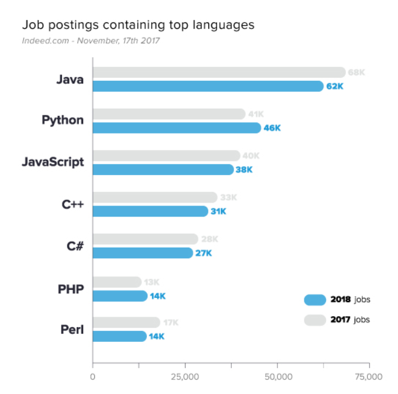
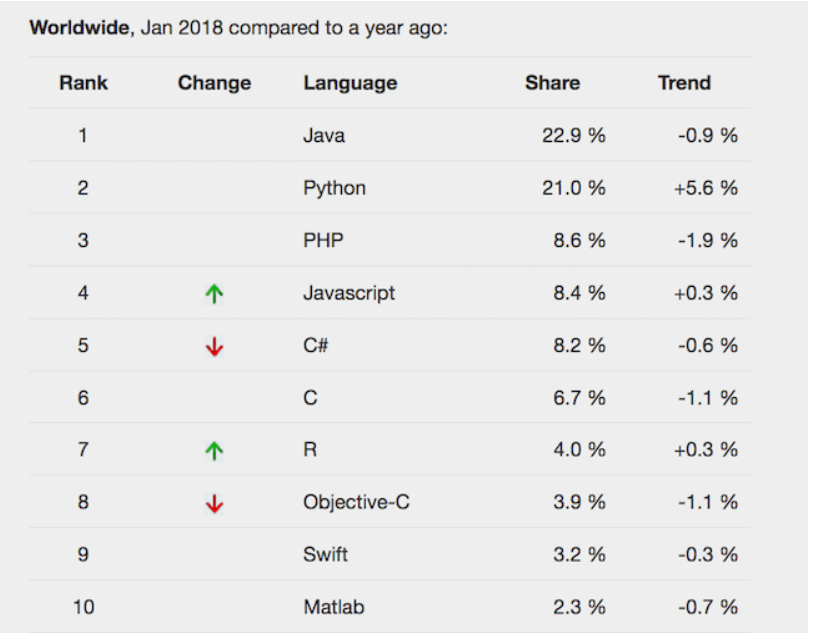

Hello html
Hypertext Markup Language (HTML)
- 알고리즘이란 무엇인가?
- 2018년 자주 쓰인 프로그래밍 언어
- 생활코딩 html코딩을 하면서 느낀점
2018년 자주쓰인 프로그래밍 언어 목록
검색어 : "Most Popluar programming languages 2018"
부동의 1위는 Java였다. 자바 스크립트와 파이썬 또한 높은 사용률을
보였고 PHP와 C++ C#이 그 밑을 따라왔다
. 순위엔 없지만 Google개발 언어인 Go도 있었다.

